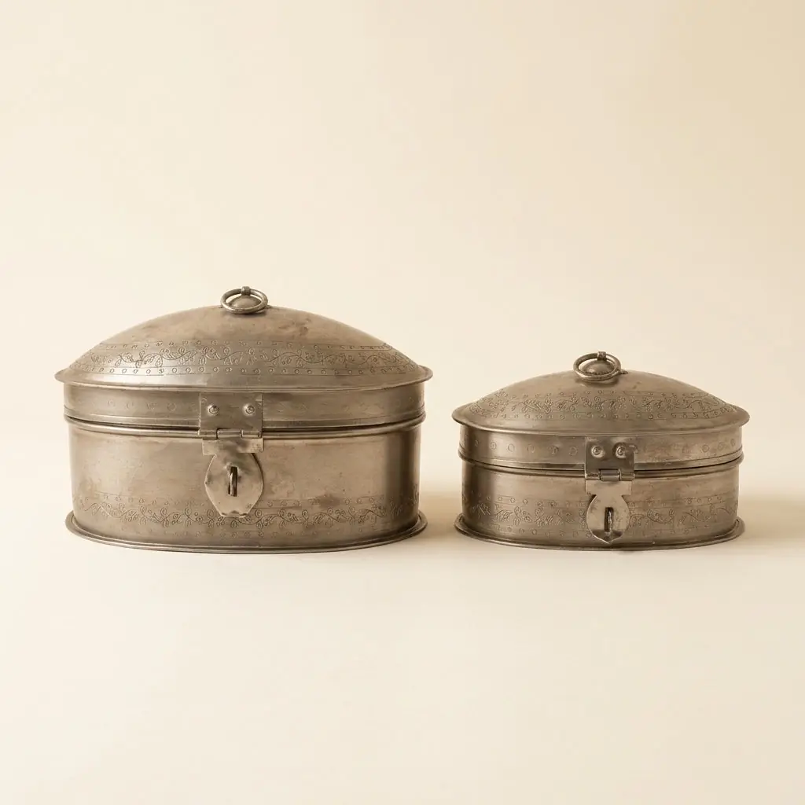
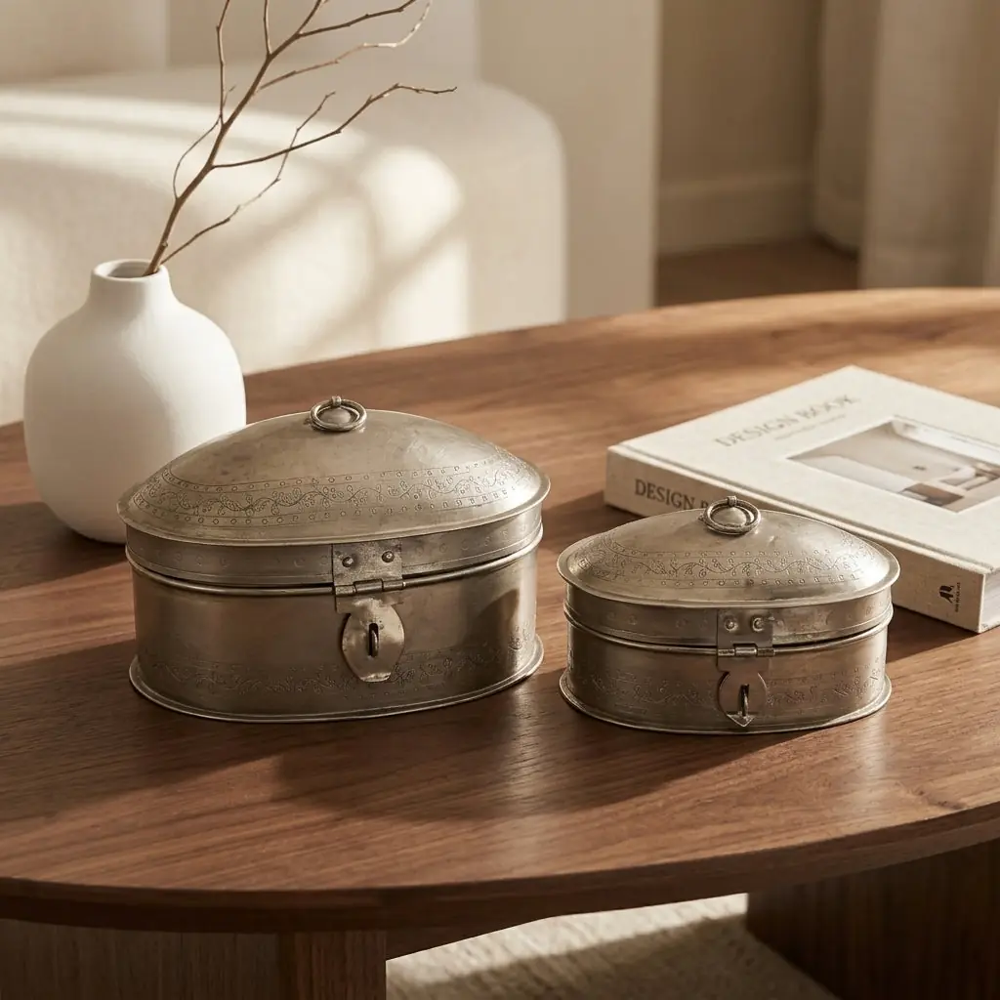
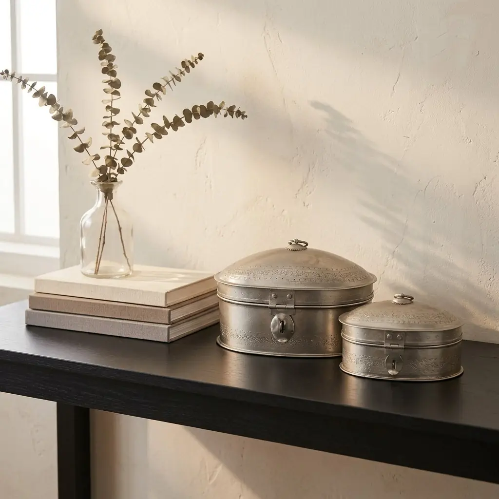
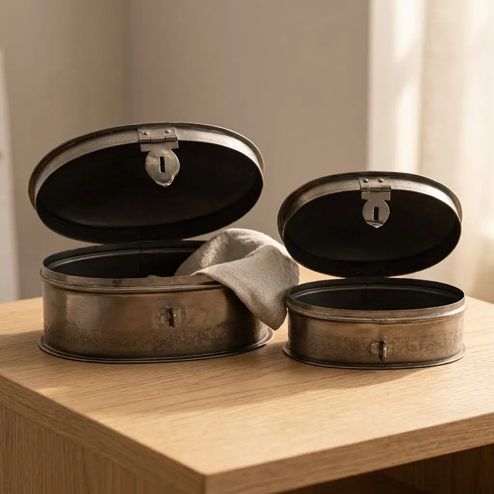
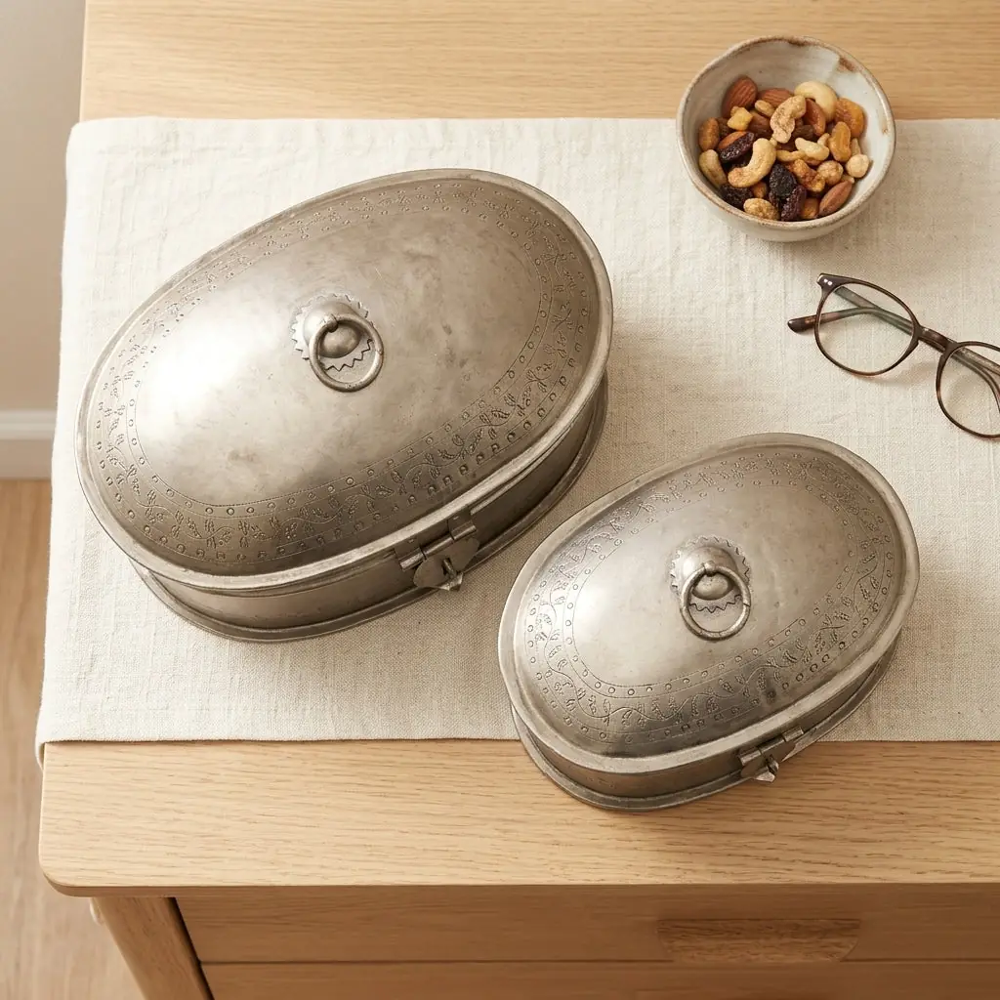
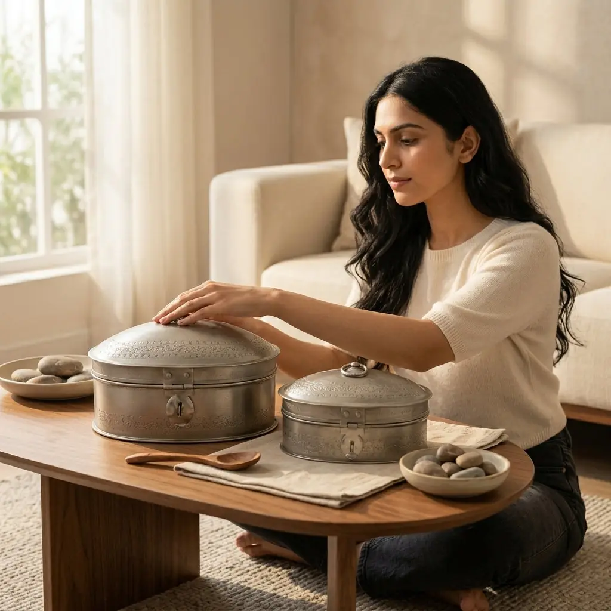
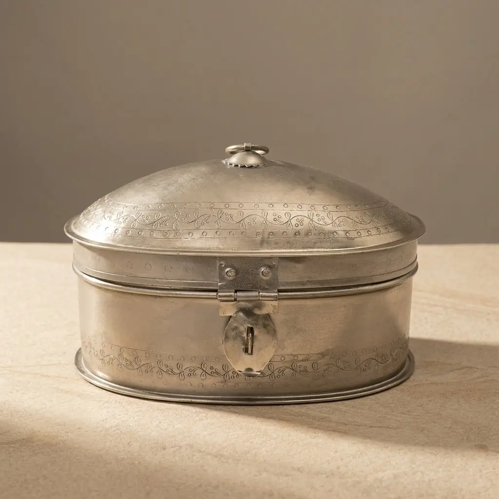
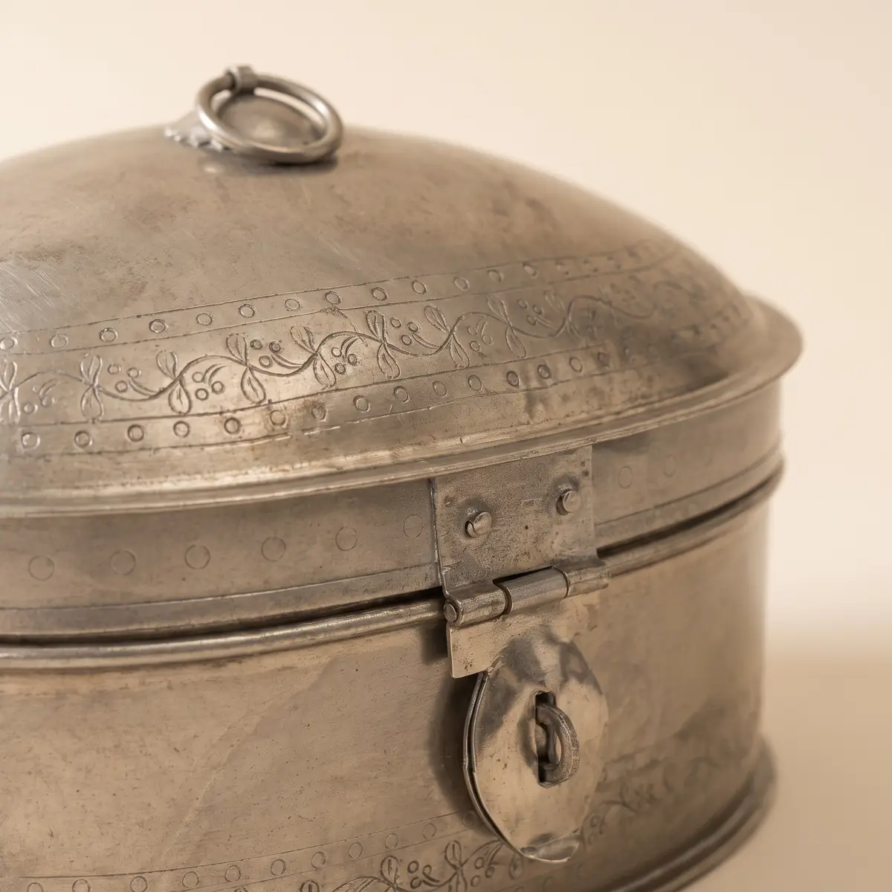
Two oval boxes, quietly useful
₹1,750
I am a set of two oval iron boxes with hand-punched patterns and an antique nickel finish. With my front latch and lid ring handle, I safely hold your small keepsakes and dry snacks indoors.
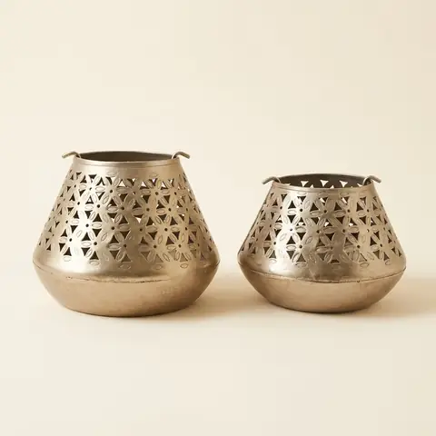
Iron Lanterns, set of 2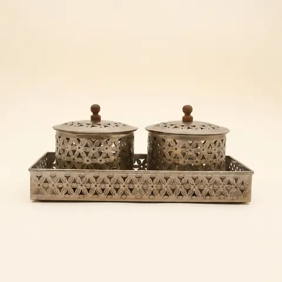
Iron Boxes with Tray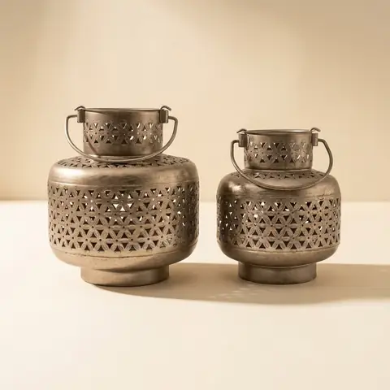
Round Iron Lanterns, set of 2Wipe clean using a soft, dry cloth.
India only. Leaves Jodhpur in 3–7 business days. 7-day returns; report any damage within 48 hours.
Photos marked Concept image are AI-generated from the real product photos and checked for accuracy. Handmade, so each piece varies slightly.
Open in swipe view